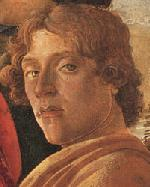

Sandro Botticelli (1445-1510)Pintor italiano de Florença e um dos maiores da renascença. Nascido Alessandro di Mariano Filipepi, adotou o apelido Botticelli (de botticello - pequeno barril), que pode ter sido o apelido do seu irmão mais velho ou do ourives do qual foi aprendiz. Foi aprendiz de Filippo Lippi e trabalhou com o pintor Antonio del Pollaiuolo. Foi também influenciado por Andrea del Verrocchio. Botticelli passou a vida trabalhando para as grandes famílias de Florença, como os Médici, para os quais pintou retratos como o de Giuliano de Médici (1476) e outras composições como Minerva e o centauro (1485). Pintou também vários quadros para a igreja, confrarias ou particulares, como Adoração dos magos (1477) (com as figuras dos Médici), O nascimento de Vênus (após 1482) e Madona do Magnificat (após 1480). Botticelli foi um dos pintores que ilustrou a capela sistina em Roma (entre 1481 a 1482). Lá pintou os afrescos A infância de Moisés, A punição dos filhos de Corá e A tentação de Cristo. Na última década do século XV, os Médici foram expulsos de Florença e Botticelli entrou em crise religiosa, cuja influência se percebe nas suas últimas obras: Pietà, Natividade Mística Crucificação Mística (após 1490). Botticelli fez vários desenhos em pergaminho que ilustram a sua interpretação da Divina Comédia. A maioria são desenhos apagados, com figuras esboçadas. Poucos são coloridos. O Inferno de Dante segundo Botticelli é menor e menos ousado que a concepção de Gustave Doré. Fontes: [Encarta 97], [Larousse 98], WebMuseum: Botticelli, Sandro, Carol Gerten's Fine Art: Botticelli. Todas as ilustrações de Botticelli para a Divina Comédia podem ser encontradas em [Elf] e [Carthage].
|